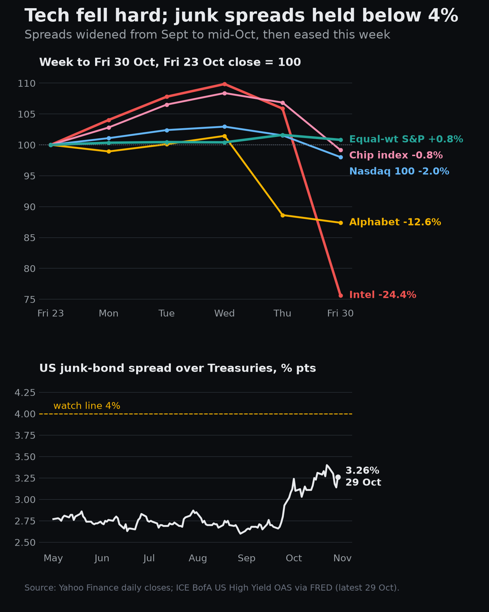
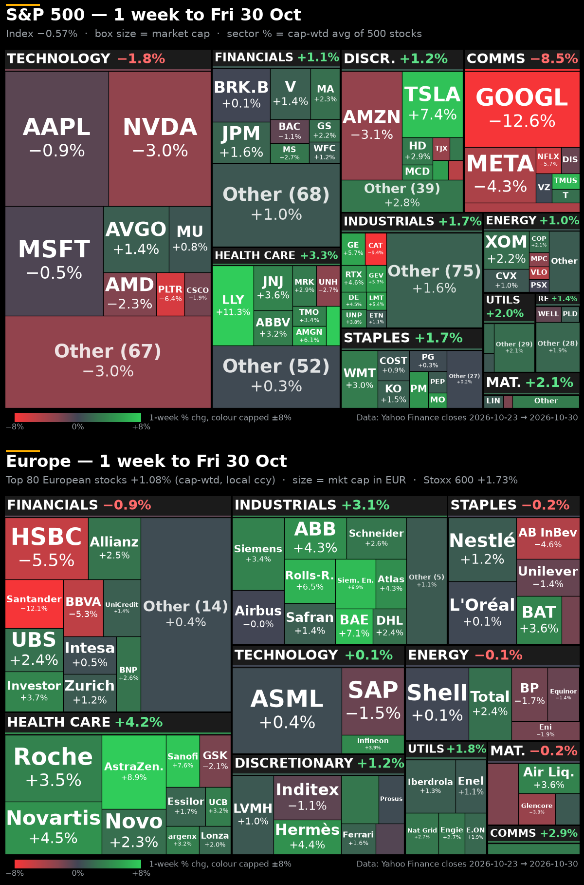
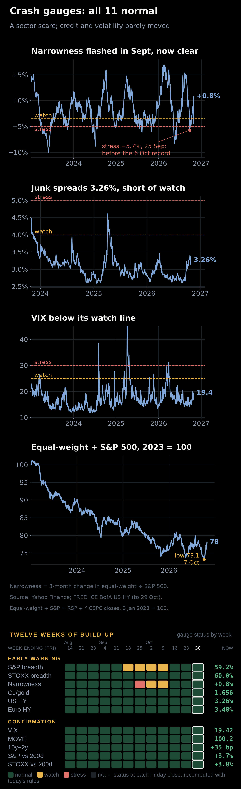

WEEKEND PULSE AI's funding scare hits tech; the rest of the market shrugs Week to Fri 30 Oct 2026 · Fri 23 Oct close → Fri 30 Oct close · 12-minute read, then reference lists. AI's debt bill: why one credit rating shook the stock market | | Paying with borrowed money. Big Tech used to pay for the AI build-out from the cash it earns. Not any more. In the third quarter Alphabet spent $51.4bn on equipment against $42.3bn of cash from operations, so free cash flow turned negative ($9.1bn). It still plans $195–205bn of capital spending this year. Demand is not the problem: Azure grew 48%, Google Cloud 103% and AWS 39% in the quarter. Funding is. Meta also had negative free cash flow in the quarter, Amazon's free cash flow over the past year is a $42.4bn outflow, and Amazon, Alphabet and Meta have added about $208bn of long-term debt since the end of 2025. On Thursday Alphabet's shares fell 12.6%, the worst day in its history, wiping out about $500bn. | | Three layers of debt. First, the tech giants' own bonds: Amazon, Alphabet, Meta, Microsoft and Oracle had sold $218bn of investment-grade bonds by early October, more than double the $107bn of all 2025. Second, debt kept off their balance sheets. A separate company builds the data centre, borrows against it and leases it to the tech firm; Meta's Hyperion campus in Louisiana, $27.3bn of bonds issued by a Blue Owl joint venture, is the template. The Bank for International Settlements counts $75–100bn of bonds and asset-backed debt placed through such vehicles this year, and $1.2tn of data-centre lease commitments at the largest firms, $820bn of them on leases that have not started yet. Third, the AI labs and the new cloud landlords that rent them chips borrow against their contracts. Anthropic's $63bn Project North Star is the largest: over $42bn of senior loans guaranteed by Broadcom, and $18bn of junior debt backed only by Anthropic's lease payments. |  | | Why a junk rating matters. Late on Thursday the FT reported that Blackstone had told investors Anthropic is likely to get a double-B, or junk, rating after its IPO, not the investment grade it had signalled before. That changes three things. Cost: in an earlier deal, debt exposed to Anthropic paid about 8.5%, against 5.75% on the part guaranteed by Broadcom. Access: many insurers and pension funds can hold only limited amounts of junk, so the pool of lenders shrinks. Dependence: to borrow cheaply, Anthropic needs stronger co-signers, which moves risk onto the chip makers. If the tenant pays more to borrow, fewer data centres get built, and the demand for chips and power behind today's prices is in question. Anthropic is not short of cash now: $112bn in hand, and the IPO is expected to raise about $100bn. | | Intel and the shortage doubt. Intel beat on the third quarter ($16.5bn revenue, up 21%) but guided fourth-quarter revenue to $15–16bn against $17.1bn expected, and said it will not have positive cash flow this year. The weakness came from PCs. Memory makers have moved capacity to AI memory, memory prices have soared, PC demand has softened, and Intel expects its PC chip sales to fall by more than 20% this quarter. That raised a question over the shortage itself: some of the tightness may be customers buying ahead, which fades when prices bite. Intel fell 28.6% on Friday, its worst day since 1974, and the cost of insuring its debt against default hit a record. | | How it spread. On Friday the chip index fell 7.2%, ASML 6.1% and Korea's Kospi 3.5%; the Nasdaq 100 lost 3.5% and briefly traded 10% below its 6 Oct record, the line for a correction. The equal-weight S&P rose 0.8% on the week, and the US junk-bond spread narrowed to 3.26% by Thursday, after widening from 2.60% in late August. | | We have seen the pattern before. Railways, electrification and the late-1990s telecom fibre boom all moved from paying with profits to paying with debt. The BIS puts the data-centre boom alongside them and warns that good and bad booms look alike in real time: credit grows the same way until the productivity gains arrive, or don't. | | What would make it worse, or ease it. Worse: Moody's, S&P or Fitch confirming junk for Anthropic; a weak IPO; wider spreads on tech-company bonds; more suppliers guaranteeing their customers' debt; the US junk spread above 4%; another free-cash-flow miss. Easier: a strong IPO; an investment-grade rating; more equity in the mix; AI revenue catching up (Anthropic booked $16.3bn in the first half); and more quarters like Microsoft's, where free cash flow stayed positive at $18.6bn and the company says it will stay free-cash-flow positive in its financial year to June 2027. | Our view. This is a financing question, not yet a credit event. The test is whether lenders keep funding the build-out at a price that still makes sense. The ratings, the Anthropic IPO and the junk spread will answer it before earnings do. | At a glance The week in five points | 1. Funding, not the Fed, drove Friday. A report that Anthropic may get a junk rating after its IPO put a price on AI's borrowing needs.
2. Intel fell 28.6%, its worst day since 1974, on a weak guide. On Friday chips (SOX −7.2%) and Korea (Kospi −3.5%) went with it.
3. Alphabet's $500bn Thursday rout and Amazon's negative free cash flow showed the bill for the AI build-out.
4. Underneath, the market broadened. Equal-weight S&P rose 4.9% in October while the S&P fell 0.9%.
5. The Fed, ECB and BoJ all held. The crash gauges read all clear: this was a sector scare, not a broad one. | S&P 500 −0.6% · Nasdaq 100 −2.0% · Stoxx 600 +1.7% · US 10y −6bp · Brent +1.5% · Gold −2.7%UNUSUAL MOVES OMXC25 +4.9% 2.3σ · Diesel crack −6.39 1.9σ · EUR/SEK −1.0% 1.5σ · CSI 300 ETF −2.7% 1.5σ · Shanghai −2.5% 1.5σ · OMXS30 +3.0% 1.4σ
σ = this week's move ÷ the typical weekly move over the past year (52 Friday-to-Friday changes). Friday's single-day chip moves were bigger; they sit in section 1. | | Two markets this week. Big Tech fell hard, while the equal-weight S&P rose 0.8% on the week, the Stoxx 600 1.7% and Stockholm 3.0%. The damage was deep, not wide: money moved out of the AI borrowers and into the rest of the market, not out of stocks. | 1 · Markets Intel −28.6% on Friday, a junk-rating scare for Anthropic: the Nasdaq 100 touches −10% | | The trigger came overnight: a report that Anthropic may get a “high” junk rating, not investment grade, once it lists. That puts a question mark over how the biggest AI builders pay for compute. Intel then guided fourth-quarter revenue to $15–16bn against $17.1bn expected and earnings of 25c against 43c, citing a PC slowdown and a $600m hit from the explosion at its Israel fab. Its five-year CDS hit a record 124.75bp. About $146bn of value went, roughly $12bn of it on the US government's 10% stake. | | On Friday the Nasdaq 100 fell 3.5% and touched −10.0% from its record intraday before closing 9.1% below it. The S&P 500 lost 1.8% on the day and sits 3.1% off its high. Reddit (−22% premarket) and Roblox (−18%) fell on results; Rivian rose 9% on a better delivery outlook. A $6.3bn hack at Binance hit crypto. | | | Intel lost 24.4% on the week and 45% since 30 Sep. Nvidia, the supplier with cash rather than a borrower, gave up only 3.0%. CoreWeave, the debt-funded AI landlord the Anthropic rating story is about, sits at the bottom of its 52-week range, down 37% since 30 Sep. | FRIDAY ALONE Intel −28.6% · AMD −10.9% · CoreWeave −9.7% · Semis SOX −7.2% · Oracle −6.4% · ASML −6.1% · TSMC (ADR) −5.9% · Nvidia −4.2% · Nasdaq 100 −3.5% · S&P 500 −1.8% · Equal-wt S&P −0.8% · US energy (XLE) +1.9%
Thu 29 → Fri 30 Oct close. Tiles (Fri → Fri) lose less: several names rose earlier in the week. | Our view. The market is now pricing who pays for AI, not just who builds it. Hyperscalers are burning cash, the next layer needs the debt market, and Intel showed old demand is soft. Expect credit headlines (ratings, CDS, private loans) to move chip stocks as much as earnings do. What would change this: an investment-grade rating for Anthropic, or CoreWeave and Oracle bonds holding firm while the stocks fall. | 2 · AI trade Alphabet's worst day: the market now sorts the hyperscalers by free cash flow | | | Line the four up by free cash flow and you get the week's ranking. Microsoft kept free cash flow positive ($18.6bn) and ended down only 0.5%, near the top of its 52-week range. Amazon (free cash flow over the past year −$42.4bn, capex held at $220bn) fell 3.1%, Meta (negative in the quarter) 4.3%, and Alphabet, whose quarterly free cash flow turned negative (−$9.1bn), 12.6% to the bottom of its range: a 1.5% gain Monday to Wednesday, Thursday's 12.6% drop, then 1.4% off on Friday. Investors are no longer paying for capex as such; they pay for capex a company can fund itself. | Our view. The more a hyperscaler needs the bond market, the more it trades like a credit. That is the link to Friday's Anthropic story. What would change the view: a strong Anthropic IPO or an investment-grade rating would narrow Alphabet's and Meta's funding discount; a downgrade or a weak IPO would widen Microsoft's premium. Apple and Palantir (Mon) and AMD (Tue) report next. | 3 · Rates Fed, ECB and BoJ hold; the front end rallies on the equity scare, credit stays calm | | | Yields: CNBC closes, change in basis points (1bp = 0.01 percentage point). 10y − 2y from those closes. *US HY spread = ICE BofA US high-yield option-adjusted spread (FRED), latest Thu 29 Oct; Friday is not published yet, so its week is Fri 23 → Thu 29 Oct. Red on the HY tile = spreads wider. | | The Fed held at 3.75–4.00% with two dissents for a hike (Cook and Hammack); Chair Warsh will cut the number of meetings from 2027. The ECB held at 2.50%, and Lagarde will step down on 7 Feb 2027. The BoJ held at 1.25%, 8–1, and signalled more hikes. US Q3 growth came in at 3.4%. | | The US 2-year fell 10bp to 4.581% and the 10-year 6bp to 4.93%, so the curve steepened 4bp to +35bp. That came from the equity scare, not the Fed: two hawkish dissents and 3.4% growth argue against cuts, yet the front end rallied as the Nasdaq fell. Credit showed the strain first: the junk-bond spread widened from 2.60% in late August to 3.40% on 22 Oct. It is not a credit crunch: the spread tightened 12bp to 3.26% while AI stocks sold off, so borrowers can still raise money. Gilts rallied 7.8bp after the Budget. | Our view. The 2-year move is borrowed from the stock market and can reverse as fast if the scare fades. What would change the view: the HY spread back above 3.40% (its 22 Oct level) and heading to 4% would mean the AI funding worry has spread into broad credit; a 2-year back above 4.70% would mean it has faded. | 4 · Europe Europe and the Nordics rise as money leaves US AI; the krone nears its strongest in a year | | | The Stoxx 600 gained 1.7%, Stockholm 3.0% and Copenhagen 4.9%, a 52-week high. Health care (+4.2%) and industrials (+3.1%) led Europe's top 80; UK and Spanish banks lagged (Santander −12.1%, NatWest −7.6%, Lloyds −7.1%). Europe has almost none of the debt-funded AI build-out that hit the US, so investors who cut AI exposure kept their equity risk and moved part of it here. EUR/NOK fell 1.2% to 10.339, the krone close to its strongest in a year, with Brent at $113 and European gas above €100. | Our view. This is a rotation into Europe, not a vote for European growth: the leaders are defensive health care, and the krone trades on energy. What would change the view: if the AI funding scare became a credit event, European banks and cyclicals would follow the US down; a Gulf de-escalation would take the krone's energy premium out first. | 5 · Monitor The week on one screen | Our view. Investors treated the AI funding scare as a sector problem and sold crowded winners, not risk as a whole: no flight to the dollar, gold or long Treasuries. What would change the view: the dollar, gold and the MOVE index rising together, which would mean the scare has turned into a hunt for safety. | The index fell 0.6%, but the damage sat in the giants: the Nasdaq 100 lost 2.0% (6.7% since 30 Sep) while the equal-weight S&P rose 0.8% and the Russell 2000 1.3%. The chip index ended the week only 0.8% lower even after Friday's 7.2% fall, so most of the week's chip gains went in one day. Options did not price a broad selloff: the VIX ended flat at 19.4 and the MOVE fell 3.0%. S&P 500 −0.6% 7,580 1M −0.9%
YTD +10.7% ▅▄▃██▅▄▃▅▁ Nasdaq 100 −2.0% 28,385 1M −6.7%
YTD +12.4% ▆▆▆██▅▄▂▄▁ Dow −0.9% 51,770 1M +1.7%
YTD +7.7% ▃▃▁▃▄▃▅█▆▄ Russell 2000 +1.3% 2,812 1M +0.5%
YTD +13.3% █▇▆█▆▁▁▅▇▇ S&P equal-wt +0.8% 8,842 1M +4.9%
YTD +13.9% ▃▁▁▃▄▃▄███ Semis (SOX) −0.8% 10,689 1M −15.4%
YTD +50.9% ▆▆▇█▆▄▂▁▃▁ VIX −0.2% 19.42 1M +18.8%
YTD +29.9% ▁▃▃▁▁▄▇█▅█ MOVE −3.0% 100.2 1M −9.3%
YTD +56.7% ▁▄██▆▅▆▇▅▅ | | | | | | | |
S&P 500, Dow = large caps; Nasdaq 100 = biggest Nasdaq non-financials; Russell 2000 = small caps; equal-wt = the average S&P stock; SOX = chip stocks; VIX = S&P implied volatility, MOVE = Treasury implied volatility (red when rising). Europe took the money that left US AI: the DAX rose 2.5%, the CAC 2.4%, Stockholm 3.0% and Copenhagen 4.9% to a 52-week high; the SMI closed at its 52-week high. The FTSE (+0.4%, banks) and Helsinki (+0.2%) lagged. Stoxx 600 +1.7% 646.8 1M +1.9%
YTD +9.1% ▆▅▁▄▂▅▆▅▇█ DAX +2.5% 25,818 1M +2.5%
YTD +5.4% ▅▄▁▅▂▄▄▄▆█ CAC 40 +2.4% 7,969 1M +0.1%
YTD −2.2% █▇▁▂▁▂▂▁▃▅ FTSE 100 +0.4% 10,730 1M +1.2%
YTD +8.0% ▇▇▁▃▃███▇█ SMI +2.4% 14,811 1M +7.1%
YTD +11.6% ▃▃▁▂▂▄▆▇▇█ OMXS30 +3.0% 3,271 1M +0.1%
YTD +13.5% █▇▄▇▅▆▆▁▅▆ OMXC25 +4.9% 1,974 1M –
YTD – ▃▂▁▂▂▂▃▅▆█ OMXH25 +0.2% 6,191 1M −3.7%
YTD +8.5% █▆▄▆▄▅▃▁▂▁ | | | | | | | |
Stoxx 600 = Europe's 600 large and mid caps; DAX = Germany; CAC = France; FTSE = UK; SMI = Switzerland; OMXS30, OMXC25, OMXH25 = Stockholm, Copenhagen, Helsinki. Split two ways. The AI-chip markets swung: Kospi still rose 3.3% after Friday's 3.5% fall, but is 16% down since 30 Sep; Taiwan fell 1.8%. Mainland China fell for its own reasons, with the CSI 300 ETF and Shanghai at one-year lows. Nikkei 225 +1.0% 63,290 1M −5.2%
YTD +25.7% ▂▄▅█▇▆▃▁▁▁ Kospi +3.3% 5,731 1M −16.2%
YTD +36.0% ▇███▆▃▂▁▁▂ Hang Seng +0.9% 23,294 1M −5.4%
YTD −9.1% █▇▇▅▄▆▅▁▁▂ CSI 300 ETF −2.7% 4.065 1M −8.3%
YTD −14.5% ▇██▆▅▄▃▁▁▁ Shanghai −2.5% 3,599 1M −6.3%
YTD −9.3% ▇██▆▆▄▄▂▂▁ ASX 200 +1.3% 8,908 1M +1.4%
YTD +2.2% ▅▂▁▄▃▄▇▅▇█ Taiwan −1.8% 45,212 1M −5.7%
YTD +56.1% ▂▅▅▆██▄▂▂▁ Nifty 50 +2.0% 23,053 1M +1.9%
YTD −11.8% █▆▄▃▁▄▇▄▄▆ | | | | | | | |
Nikkei = Japan; Kospi = Korea; Hang Seng = Hong Kong; CSI 300 (via ETF) and Shanghai = mainland China; ASX = Australia; Taiwan = TAIEX; Nifty = India. Only the US front end moved: the 2-year fell 10bp, the 30-year barely moved. No haven bid in long bonds; gilts rallied 7.8bp on the Budget. US 2y −10bp 4.581% 1M −31bp
YTD +111bp ██▅▅▅▆▅▂▄▁ US 10y −6bp 4.929% 1M −36bp
YTD +78bp ▁▆██▇▆▅▁▂▁ US 30y −1bp 5.309% 1M −33bp
YTD +48bp ▁▅██▇▆▄▁▁▁ Germany 2y −1bp 3.016% 1M −18bp
YTD +89bp ██▂▂▃▃▃▁▁▁ Germany 10y −1bp 3.330% 1M −25bp
YTD +47bp ▆█▅▄▄▄▄▁▁▁ UK 10y −8bp 5.292% 1M −13bp
YTD +82bp ▄▆▆▆▇▆█▃▄▁ Swiss 10y −3bp 0.474% 1M −9bp
YTD +19bp ▄█▅▃▅▅▄▂▁▁ Japan 10y +0bp 2.785% 1M −30bp
YTD +72bp ▆████▆▄▃▁▁ | | | | | | | |
Government bond yields, change in bp. Yield up = price down. No dash for dollars (index +0.1%). The movers were Scandinavian: EUR/NOK −1.2% and EUR/SEK −1.0%. Dollar index +0.1% 101.88 1M +0.4%
YTD +3.7% ▁▁▆▅▇█▅▃▇▅ EUR/USD −0.3% 1.1183 1M −1.4%
YTD −4.8% █▆▅▂▂▁▂▂▁▁ USD/JPY +0.8% 157.80 1M +0.3%
YTD +0.9% ▁▁▁▅▆█▄▇▁▄ USD/CHF +0.5% 0.8236 1M −1.3%
YTD +4.0% ▁▅█▆▆▇▂▂▄▂ GBP/USD −0.2% 1.3379 1M +1.1%
YTD −0.7% ▆▁▃▁▁▂▆█▆█ EUR/CHF +0.1% 0.9209 1M −2.7%
YTD −1.0% ▆██▄▄▄▂▂▂▁ EUR/SEK −1.0% 11.009 1M −2.9%
YTD +1.9% ▇██▇▅▄▃▃▃▁ EUR/NOK −1.2% 10.339 1M −5.0%
YTD −12.4% ▇██▆▆▅▄▃▁▁ | | | | | | | |
Dollar index = USD against six majors. Pairs = units of the second currency per one of the first: EUR/NOK down = krone stronger. No haven demand: gold fell 2.7% to a 52-week low and silver 8.6%. A credit crunch would have lifted gold. Gold −2.7% $3,899 1M −6.9%
YTD −10.2% █▆▆▆▇▄▅▄▄▁ Silver −8.6% $49.10 1M −18.3%
YTD −30.0% █▇▇▇▇▄▅▃▃▁ Copper −0.3% $6.458 1M −1.5%
YTD +14.7% █▆▄▆█▇▅▁▇▃ Aluminium +1.3% $3,310 1M +0.8%
YTD +13.9% █▇▃▄▃▁▂▃▅▆ | | | |
Front-month futures: gold and silver $/oz, copper $/lb, aluminium $/t. Oil and gas are in sections 7 and 8. Down 3–6% with the momentum trades, plus the $6.3bn Binance hack. Bitcoin −4.8% $77,198 1M −7.6%
YTD −11.8% ██▆▅▅▅▇▄▄▁ Ether −6.0% $2,241 1M −16.5%
YTD −24.5% ██▅▄▄▃▅▃▂▁ Solana −6.4% $96.22 1M −18.5%
YTD −22.7% ██▅▄▃▃▄▂▂▁ XRP −3.1% $1.254 1M −15.7%
YTD −31.8% ██▅▃▃▂▄▂▃▁ | | | |
Spot prices in US dollars. Crypto trades 24/7; daily close 00:00 UTC. Tiles read as in section 1: week change large, then price, 1M and YTD, last-30-session sparkline and 52-week range bar. | 6 · One-week maps Where the money moved | | In the US, Alphabet, Meta and the chip makers are the red block; almost everything outside tech and communications is green. Only communication services (−8.5%) and technology (−1.8%) fell as sectors, and health care led on both sides of the Atlantic. In Europe, the big pharma names and the industrials led and the UK banks lagged. |  | Box size = market value; colour = the week's move, Fri 23 → Fri 30 Oct. US = S&P 500 by sector; Europe = the 80 largest Stoxx 600 stocks.
S&P 500 321 up / 178 down. Best: PNR +19.8%, VRT +19.6%, CVNA +18.1%. Worst: RDDT −36.4%, NOW −33.9%, FFIV −25.7%.
Europe top 80 58 up / 22 down. Best: AstraZen. +8.9%, Deut Bank +7.7%, Sanofi +7.6%. Worst: Santander −12.1%, NatWest −7.6%, Lloyds −7.1%. | Our view. Watch whether the selling spreads to utilities and industrials tied to data-centre power and construction. They are the next link in the AI spending chain; so far they have held up. | 7 · Energy desk: oil Oil holds its war premium while refining margins slip | | | Front-month futures. Brent Jan-27 (Dec-26 expired Fri 30 Oct), WTI Dec-26, Dutch TTF gas €/MWh, Henry Hub gas Dec-26 $/MMBtu. | | | Cracks in $/bbl; big number, 1M and YTD are $ changes. 3-2-1 = (2 × RBOB + ULSD) × 42 ÷ 3 − WTI; diesel = NY Harbor ULSD Dec-26 × 42 − Brent Jan-27 on both Fridays (no roll); gasoline = RBOB × 42 − WTI. RBOB Dec-26 in $/gal. | | | Brent Feb-27 = second month. Jan−Feb spread in $; positive = prompt oil dearer. Heating oil = NY Harbor ULSD Dec-26. ICE gasoil = London front month, $/tonne, history from 1 Oct only, so no 1M, YTD or range bar. | | | Gasoil crack = gasoil ÷ 7.45 − Brent Jan-27, $/bbl. AAA = US average pump price Fri 30 Oct; week vs Sat 24 Oct, 1Y vs a year earlier. No daily history, so no sparkline or range bar. | US oil stocks vs the last five years EIA week to Fri 23 Oct · shaded = 5-year range for that week, amber = 5-year average | US crude (ex SPR) −3.8% vs 5y avg | 410.6 mb −1.9 w/w | | | 5y low 416 | 5y high 440 | | Cushing crude +9.3% vs 5y avg | 27.0 mb −0.6 w/w | | | 5y low 21 | 5y high 27 | | US gasoline −2.1% vs 5y avg | 209.2 mb +3.9 w/w | | | 5y low 208 | 5y high 223 | | US distillate −9.6% vs 5y avg | 102.8 mb −1.5 w/w | | | 5y low 106 | 5y high 125 |
| Shaded = 5-year range for that week; amber = 5-year average; white tick = now. Million barrels; w/w = change on the week. Cushing = the WTI delivery hub. | | Brent's January contract rose 1.5% to $113.43, a 52-week high, and 19% since 30 Sep. Tanker attacks around Iran, including limpet mines, kept the war premium, and oil rose on Friday while stocks fell. Refining tells a different story. The diesel crack fell $6.39 to $82.97 and the 3-2-1 $1.62 to $49.73, while the gasoline crack was flat at $28.45. Further down the chain prices eased too: heating oil −2.3%, ICE gasoil −0.9% (its crack −$3.61 to $84.96) and US pump gasoline −2.1% (AAA), and Brent's Jan−Feb spread narrowed $0.51 to $3.87. Crude is being held up by supply risk, not pulled up by fuel demand; demand-led strength would widen those margins. US crude stocks are 3.8% below the five-year average and distillates 9.6% below (EIA, week to 23 Oct), so diesel can tighten fast in a cold snap. | Our view. Oil ignored the AI scare, and that still matters for AI: $113 Brent keeps inflation sticky and the Fed's two hike dissents alive, which raises the cost of the debt AI now borrows. What would change the view: a Gulf de-escalation would hit Brent's premium first; a diesel crack back above $90 would mean physical tightness is returning. | | Fund positioning | CFTC (WTI) · ICE (Brent) |
Hedge-fund positioning in crude Managed-money net long, contracts, as of Tue 27 Oct (published Fri) · bar = 1-year range | WTI (NYMEX) pctile 1y 21 · 3y 13 | +31k −5k w/w | | | 1y low −37k | 1y high +112k | | Brent (ICE) pctile 1y 50 · 3y 63 | +220k −1k w/w | | | 1y low +41k | 1y high +382k |
| Net long = money managers' long minus short contracts. Percentile = where this week's net position sits in the past year (0 = the shortest). | 8 · Energy desk: gas European gas: the gap with US gas is the widest in a year | | | TTF rose 10.8% on the week to €103.94 and 44% since 30 Sep, while Henry Hub fell 5.0% to a 52-week low of $2.898. The gap between them widened $3.35 to $31.17 per MMBtu, the widest in a year. Europe is short of gas into winter: EU storage is 74.8% full against a five-year average of 89.7% for the date. The US has more than it needs. Every spare US LNG cargo already heads to Europe, so the limit is export capacity, not price. | | European gas storage | GIE AGSI+ · 29 Oct |
European gas storage vs the last five years GIE AGSI+, Thu 29 Oct · shaded = 5-year range for the date, amber = 5-year average | EU storage 5y avg 89.7% | 74.8% full +0.1 pp w/w | | | 40% | 100% | | Germany 5y avg 88.7% | 61.4% full +0.2 pp w/w | | | 40% | 100% |
Fund positioning in European gas ICE Endex, investment funds net long, TWh, as of Fri 16 Oct · bar = 1-year range | Dutch TTF pctile 1y 45 | +193.1 TWh +18.6 w/w | | | 1y low +2.5 | 1y high +317.0 |
| Net long = investment funds' long minus short positions in ICE Endex Dutch TTF futures, from the weekly MiFID II Commitments of Traders report. Percentile = rank in the past year. As of Fri 16 Oct. | | Funds added only 1.8 TWh in the four weeks to 16 Oct while TTF rose 10%, and their net long is 124 TWh below March's peak: the rally is physical, not a crowded bet that could unwind fast. | Our view. No link to the AI scare in this week's prices. The long-run US bull case is data-centre power demand; a 52-week low in Henry Hub says it is not tightening the market yet. What would change the view: a cold spell in north-west Europe with storage 15 points below normal would land straight on TTF, and on continental and southern Nordic power. | 9 · Energy desk: power Nordic power: a weekend wind glut dragged the average down; by Friday prices were back above €150 | | | Why the week's average fell. The system price averaged €61.9, down 43.0% from €108.6; SE3 fell 30.4% and Finland 20.2%, SE1–SE2 more than halved. Wind hit 554–585 GWh a day on 25–27 Oct and the system price fell to €4.6 on Sunday as hydro producers held water back. As the wind faded, prices rebounded: on Friday the system price was €157.3 and SE4 €253.0, above last week's averages. | | Day-ahead price by area | €/MWh · 17–30 Oct |
Grey = prior week; this week green/red = above/below that area's prior-week average. Left: change, week average, Friday. Scale 0–300. | Nordic wind and hydro output | GWh per day · 17–30 Oct |
Wind SE+NO+FI+DK, hydro SE+NO+FI. Colours as above. Left: change and daily average, Sat 24–Fri 30 vs prior week. | Nord Pool day-ahead; ENTSO-E generation (A75). | | Day-ahead prices by area | €/MWh |
| Area | This wk | Prior | Chg | Sep avg | Oct 1–30 | | SYS | 61.9 | 108.6 | −43% | 95.6 | 85.9 | | SE1 | 13.9 | 31.4 | −56% | 40.9 | 26.6 | | SE2 | 15.6 | 38.9 | −60% | 45.8 | 32.1 | | SE3 | 59.5 | 85.5 | −30% | 77.7 | 70.9 | | SE4 | 135.0 | 156.2 | −14% | 106.9 | 137.0 | | FI | 30.9 | 38.8 | −20% | 57.0 | 36.7 | | DK1 | 143.2 | 169.1 | −15% | 140.9 | 156.8 | | DK2 | 146.8 | 174.0 | −16% | 143.3 | 160.1 | | NO1 | 110.8 | 149.5 | −26% | 122.9 | 130.8 | | NO2 | 119.9 | 156.9 | −24% | 130.7 | 138.9 | | NO3 | 81.3 | 106.2 | −23% | 99.2 | 91.5 | | NO5 | 107.9 | 146.8 | −26% | 122.6 | 125.7 |
| | This wk = Sat 24–Fri 30 Oct; Prior = Sat 17–Fri 23; MTD = 1–30 Oct. SE1–SE4 = Sweden north to south; SYS = Nordic system price. | | Nordic wind and hydro · Month to date | Oct 1–30 vs Sep 1–30 |
11.12 TWh ▲ +46.7% Oct 1–30 · vs 7.58 TWh Sep 1–30 Avg / day 371 GWh vs 253 full Sep ▲ +46.7% Oct · MTD 11.1 TWh Sep (full month) 7.6 TWh · cumulative, days 1–31 | BY COUNTRY · OCT 1–30 TWH | SEP 1–30 |
| HYDRO | reservoir + run-of-river |
15.82 TWh ▲ +4.4% Oct 1–30 · vs 15.15 TWh Sep 1–30 Avg / day 527 GWh vs 505 full Sep ▲ +4.4% Oct · MTD 15.8 TWh Sep (full month) 15.2 TWh · cumulative, days 1–31 | BY COUNTRY · OCT 1–30 TWH | SEP 1–30 |
| ENTSO-E generation (A75), CET days. Hydro excludes pumped storage; wind = onshore + offshore. | | What drove it | direction for price · size · why |
Wind ▼ lower price +27% · ≈ −€35/MWh est. 439 GWh/day from 345: by the rough estimate, about €35 of the €47 fall. | Hydro balance ▲ higher price −18% output · reservoirs −12 pts Water held back on windy days; Norway 69.5% full vs 81.3% median, a floor once the wind drops. | Temperature / demand ▼ lower price +1.0 to +1.9°C Milder in all four capitals: a little less heating demand. | Gas, coal, carbon ▲ higher price TTF +10.8% · Germany −7.9% Gas above €100 keeps Germany high (€164); coal and carbon not pulled. | Interconnectors ● neutral price flows not measured · SE4 −13.6% · DK1 −15.3% · DK2 −15.6% · NO2 −23.5% Flows not pulled, so no direction. The southern areas linked to Germany fell least: SE4 −13.6%, DK1 −15.3%, DK2 −15.6%. | Nuclear ● neutral price −0.2% · 137 GWh/day SE3 and Finnish reactors ran steadily; no outage. |
| | ENTSO-E generation, Sat 24–Fri 30 Oct daily average vs the prior week. Wind € = rough estimate: output change × price-on-wind slope, 17–30 Oct (−€0.37/MWh per GWh/day, r = −0.81); wind and hydro overlap, not additive. Temperatures: Open-Meteo. Reservoirs: NVE, week to 25 Oct. | | What it signals. The weekly average flatters. With Norway's reservoirs 12 points below the 2016–25 median and gas above €100, water is priced high once the wind drops, so Friday's level is the better guide to November. | Our view. This was a weather week, not a change in the balance. No link to the AI scare in these prices: Nordic data-centre demand is a slow, years-long story. What would change the view: a wet, windy November would keep averages low; a calm, cold spell would send the system price back toward Friday's €157 and narrow the north-south gap. | 10 · Crash gauges Crash gauges: all clear, because they lag a scare like this | | The stress started in one sector and showed first in credit: a junk rating for the biggest AI IPO, a record Intel CDS, cash burn at Alphabet and Amazon. It has not become a credit crunch. The 11 gauges are built to catch broad stress, and broad markets did not crack: US junk spreads narrowed 12bp to 3.26% in the week to Thursday, the VIX ended at 19.4 and 59% of S&P stocks are above their 200-day average. All 11 read normal. | | Narrowness first. It hit stress at −5.7% on 25 Sep and stayed on watch into the 6 Oct record, while a handful of AI names carried the index. Since the 7 Oct low, equal-weight has gained 6.7% on the S&P, and the gauge is back to +0.8%. The narrow leadership is now unwinding the healthy way: the leaders falling while the rest rise. |  | Overall normal of 11 gauges | |
| | Narrowness rule: watch ≤−3.5%, stress ≤−5% while the S&P is within 5% of its 52-week high. Calibrated on daily data since Aug 2007: −3.5% is about the 10th percentile of 3-month changes on days near a high, −5% about the 3rd. Lowest 3-month narrowness in the six months before past S&P peaks: Oct 07 −3.9%, Sep 18 −2.4%, Feb 20 −3.4%, Jan 22 −4.5%, Feb 25 −5.2%. US and Euro HY as of 29 Oct (FRED). | | What each gauge measures | now · status |
Share of S&P 500 stocks above their own 200-day average. It falls before the index does when fewer stocks carry the rally. Watch below 50%; stress below 30%. | The same test for the Stoxx 600: how many European stocks are in a long-term uptrend. Watch below 50%; stress below 30%. | Equal-weight S&P (RSP) against the cap-weighted S&P, 3-month change. A deep negative reading near a high means a few giants carry the index; it came before the 2007, 2022 and 2025 peaks. Watch −3.5% or lower; stress −5% or lower, only while the S&P is within 5% of its high. | The growth metal against the fear metal. It falls when investors price slower growth. Watch below 1.22; stress below 1.16. | Extra yield on US high-yield bonds over Treasuries: the market price of default risk. It widens before equity crashes when funding dries up. Watch 4%; stress 5%. | The same price of default risk for European high-yield borrowers. Watch 4%; stress 5%. | | VIX CONFIRMATION | 19.42 · normal |
Implied volatility of the S&P 500 over 30 days. It confirms stress once selling becomes broad. Watch 25; stress 30. | | MOVE CONFIRMATION | 100.2 · normal |
Implied volatility of Treasuries. Bond stress spills into everything priced off yields. Watch 120; stress 150. | The 10-year minus the 2-year Treasury yield. An inverted curve has come before recessions. Watch below 0; stress below −50bp. | The index against its long-term trend. Below it, trend-following money turns seller. Watch below 0%; stress below −5%. | The same trend test for European stocks. Watch below 0%; stress below −5%. |
| | What they say together. The early-warning group (breadth, narrowness, copper ÷ gold, junk spreads) says the economy-sensitive parts of the market are fine and the rally has broadened. The confirmation group (VIX, MOVE, curve, trend) says there is no broad selling. Friday's selloff fits neither group because it hit a small set of very large stocks: the Nasdaq 100 fell 3.5%, the equal-weight S&P only 0.8%. The gauges would see it only if the AI funding scare spread into junk credit or pulled the whole index below its trend. | | What would turn them. US junk spreads above 4% (now 3.26%, 2.60% at the low of the past year). The VIX above 25. The S&P below its 200-day average near 7,310, 3.6% away. Narrowness back under −3.5% while the S&P is within 5% of its high (it is 3.1% off). S&P breadth under 50%. Two confirmation gauges turning together would make it a signal. | | Sentiment and leadership | CNN · CBOE · AAII |
| | | Fear and Greed: CNN's 0–100 blend of seven measures, below 25 = extreme fear, change in points. Put/call: CBOE 5-day average. VIX ÷ VIX3M: above 1 = paying up for near-term protection. SKEW: cost of far out-of-the-money S&P puts; above ~145 = heavy crash hedging. AAII (no tile): bulls 37.8%, bears 41.4%, spread −3.6, closed Wed 28 Oct. Mag 7 = equal-weighted basket. | | Fear and Greed rose 9.6 points to 26 in a week the Nasdaq 100 fell 2.0%; momentum (14.6) and safe-haven demand (2.2) stayed in extreme fear, junk-bond demand (43) near neutral. SKEW at 149.8 is up 5.5% in a month while the VIX curve is calm (0.93): investors are buying crash insurance, not selling, which fits a low-probability break in AI credit. Leadership is broadening: since 30 Sep the average stock beat the index by 5.9% and small caps the Nasdaq 100 by 7.7%; the Mag 7 is up only 2.5% this year; copper ÷ gold (1.656) is at a one-year high. Long run, equal-weight ÷ S&P fell from 100 in 2023 to 73.1 on 7 Oct and is back at 78: three years of narrow leadership only starting to unwind. | Our view. No broad stress yet. The risk is a funding problem that spreads from AI borrowers into the junk market; that would show first in the HY spread, so it is the line to watch. | 11 · This week's must reads | | | | | Geopolitics and politics | 5 |
| | Fri 30 Oct The Novo Nordisk scientist behind GLP-1 drugs on obesity, food and what comes next. FT ↗ | | Prices: close Fri 30 Oct unless a date is shown. Futures are fixed contract months, not rolled series. Sources are listed below. | | Sources: Yahoo Finance, CNBC, FRED, CNN, AAII, CBOE, US EIA, AAA, Investing.com, GIE AGSI+, CFTC, ICE, Nord Pool, ENTSO-E, NVE, Open-Meteo, FT, Reuters Breakingviews, WSJ, central banks. Weekend Pulse. Market commentary, not investment advice. Data gaps: OMXC25 1M/YTD blank (bad Yahoo history); TTF fund positioning as of 16 Oct (23 Oct report not obtained); no interconnector flows; no coal or carbon prices in the power drivers; US HY to Thu 29 Oct; no fund flows; no OBX series. Built Sat 31 Oct 2026 21:21 Zurich (CET). | | | | | | | | | |